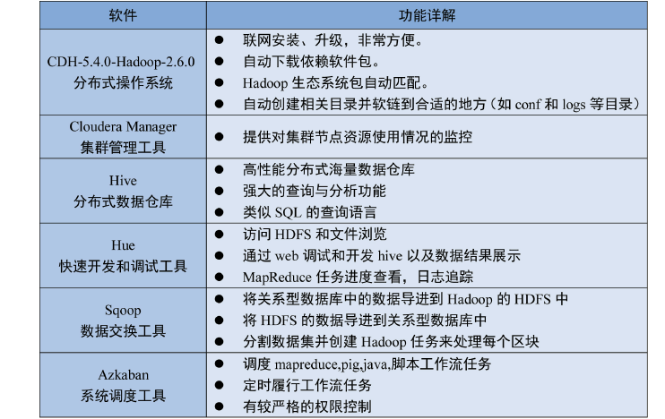
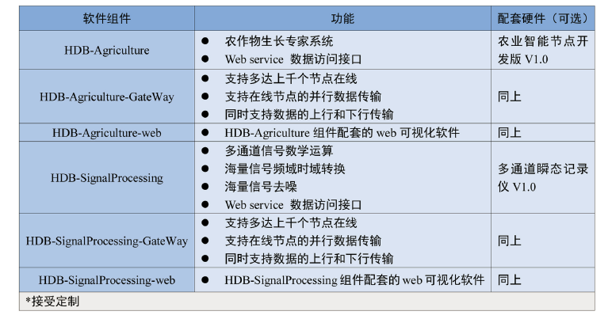
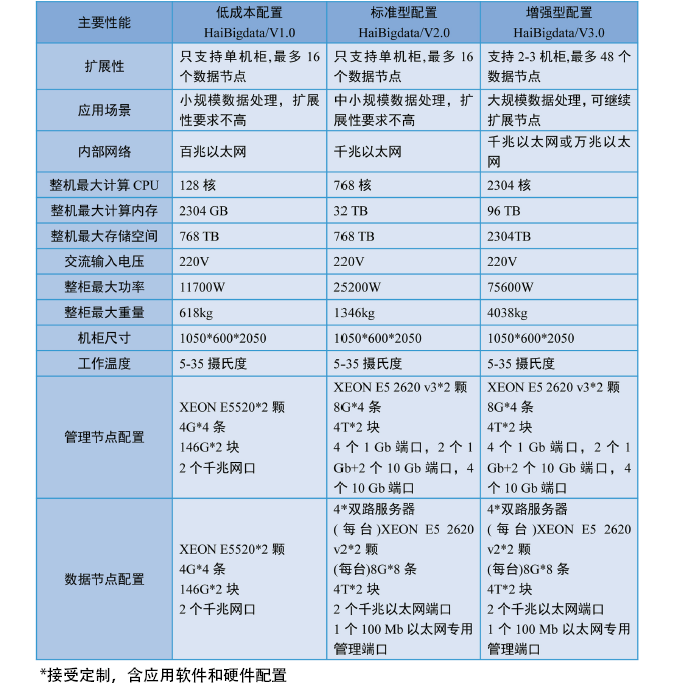
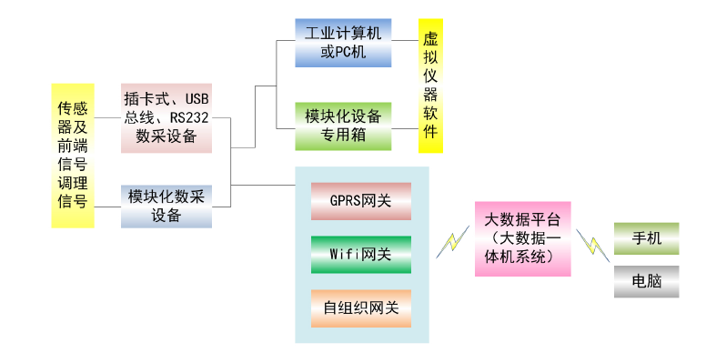
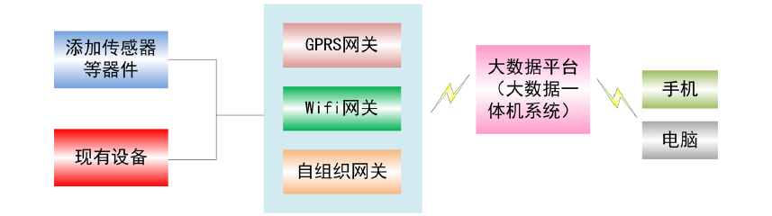

200, xiaolinwei Street (NanJing)
200, xiaolinwei Street (NanJing)
物联大数据一体机:
融合了数据采集、云存储、大数据分析、WEB和APP服务等一体化，应用与物联网、智能制造、智慧城市等物联应用领域。
安全性：
所有物联云存储服务器经过现场终端、网关、大数据一体机的严格试验测试、校准测试。
专业化：
针对工业、农业、商业智能分析应用、海量并发的数据处理应用，HaiBigdata大数据一体机根据用户应用特点提供专业化解决方案；
个性化服务：
自主研发，有能力接受客户定制。从业务分析、应用移植、应用开发到运维服务的全环节服务保障。
本公司HaiBigdata大数据一体机由三个层次构成，即底层硬件环境、系统软件、应用软件等组成。通过软件、硬件的彼此优化与整合，形成一套高性能的软硬一体的平台解决方案，并经过大量的测试调优来保证整体系统的兼容性、稳定性和可靠性。
底层硬件采用国内外知名硬件厂商成熟的产品，目前设计基于DELL服务器、华为交换机和路由器设备，物联网示范终端由本公司自主研制；
系统软件基于Hadoop集群架构，其组件包括集群管理（Cloudera Manager）、HDFS文件存储系统、数据交换工具（Sqoop）、调度系统（Azkaban）、并行计算MapReduce、与云网关接口软件、与Web服务器接口软件；
应用软件由多个不同组件构成，这些组件包含并多种智能硬件信号处理软件，具体功能包括了工、农、商业中针对不同种数据的可视化、数学运算、频谱分析、报警控制等。用户可以根据自己需求进行定制这些增值服务。
如图所示，硬件上主要由管理节点、数据节点、计算交换机，KVM控制器机柜等 组件构成
物联大数据一体机HaiBigdata的系统软件
大数据应用软件组件是建立在HaiBigdata大数据一体机的系统软件上的一组增值软 件，目前包括了HDB-Agriculture，HDB-Agriculture-web，HDB-SignalProcessing， HDB-SignalProcessing-web，并接受定制。
物联大数据一体机HaiBigdata产品选型
数采物联网 设备远程监控诊断 智能制造 智能农业 智慧城市 智能家居 智能医疗 智能交通 智能环保 智能电网 智能物流
数采物联网（远程数采系统）
数据采集的目的是为了测量电压、电流、温度、压力或声音等物理现象。
传统数采是基于PC的数据采集，通过模块化硬件、应用软件及计算机的结合，进行测量。数据采集系统整合了信号、传感器、激励器、信号调理、数据采集设备和应用软件。
数采物联网实现远程数采系统，或联网数采，主要优势是实现远程数采、网络化集中管理、数采数据集中管理与大数据分析。
数采DAQ和虚拟仪器VI、互联网、物联网(传感网)及云计算发展相融合,数采和虚拟仪器必将实现云智慧仪器,大数据智慧测试。
见下图。
设备远程监控诊断
设备远程监控诊断是在现有的机器设备上，增加设备以及生产相关数据、信息的实时自动传输、交互、管理和控制功能，从而使现有设备和生产派工任务实现管控的远程化、可视化、自动化、实时化和智能化。设备上一旦加装此功能，不但可以提高设备使用寿命，降低维护维修成本，提高设备的嫁动率和利用率，而且还可以实现精益生产和看板管理模式，缩短交货周期，提高产品质量，降低生产成本。
1) 设备可视化管控：通过互联网或移动终端，远程实时监控车间内每台设备的运行状态，“健康”状态，工作环境，正在生产什么、已经生产了多少、已经生产了多长时间、以及可以远程观看关重部件的视频等等。
2) 生产自动化管控：可以远程实现生产派工单下达、图纸和文件无纸化传输和查看、程序传输和版本管理、生产过程各种异常问题实时呼叫及处理管理、员工生产任务管理、实时生产报表看板管理等等。
3) 设备智能化管理：不仅可以实现设备台账管理、设备备品备件管理、设备保养管理、设备维修管理，还可以对设备进行远程维护，远程诊断、设备知识库维护，设备异常预警、保养预警、误操作预警等。
智能制造
智能制造、工业4.0或工业互联网本质上是互联网运动神经系统，互联网中枢神经系统也就是云计算中的软件系统控制工业企业的生产设备，办公室的办公设备，通过智能化，无线传感等技术使机械设备成为互联网大脑改造世界的工具。同时这些智能制造和智能设备也源源不断向互联网大脑反馈大数据数，供互联网中枢神经系统决策使用。
智能农业：
利用物联网、云计算、移动互联网、车联网、手机、平板电脑、PC和遍布地球各个角落的各种各样的传感器作为信息载体，使用专业技术进一步挖掘分析农业大数据，发现隐藏于背后的规律，从而实现农业生产环境的智能预警、智能决策、智能分析
智慧城市
智慧城市通过物联网基础设施、云计算基础设施、地理空间基础设施等新一代信息技术以及工具和方法的应用，实现全面透彻的感知、宽带泛在的互联、智能融合的应用以及以用户创新、开放创新、大众创新、协同创新为特征的可持续创新。从技术发展的视角，智慧城市建设要求通过以移动技术为代表的物联网、云计算等新一代信息技术应用实现全面感知、泛在互联、普适计算与融合应用。
智能家居：
智能家居用户可以使用智能终端（手机、平板电脑等无线上网设备)，可以随时随地登录云平台，查看智能家居状况、修改策略、查看系统建议、远程控制等，并向其发送指令或接受信息。极大的方便了用户的使用，为用户带来更好的体验。在智能云平台的支持下，即使客户不在家中，也可以对家中设备(灯光、门窗、窗帘、空调、电视和地加热设备等)进行远程集中监视控制，并且还可以设置各种情景模式，定时开关灯、窗帘等，提高住宅的安全性。
智慧医疗：
智慧医疗是一套融合物联网、云计算与大数据处理技术的新型解决方案。智慧医疗以“感、知、行" 为核心, 旨在建立一个智能的远程疾病预防与护理平台。“感" 即以物联网技术为基础，利用多种传感器实时跟踪各种重命体征数据并通过无线网络技术传送到医疗数据中心；“知“即利用大数据存储与处理平台，应用数据挖掘和知识发现理论对医疗历史数据进行建模与分析；“行”即将实时跟踪与历史数据的分析结果, 通过云服务的方式提供给医务人员作为诊疗参考, 或为终端用户直接提供医疗护理方案。